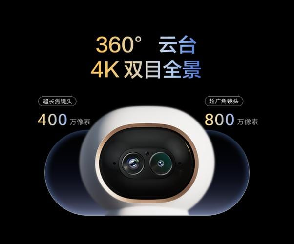

Aqara 智能摄像机 G3

Aqara 旗舰摄像机，内置 Zigbee 3.0 网关与红外遥控，一台设备同时承担看家、智能家居中枢与传统家电控制。支持 Apple HomeKit 与本地手势识别，是苹果家庭生态用户的多功能之选。
客观评测
Aqara G3 不止是摄像机：内置 Zigbee 3.0 网关可接入 Aqara 传感器、门锁等子设备，红外遥控还能控制电视、空调等传统家电，一台设备承担看家与家居中枢双重角色。摄像部分约 230 万像素 1080P，画质属入门水平，夜视为纯红外。特色是本地手势识别，可隔空手势触发场景。支持 Apple HomeKit，苹果家庭体验完整。
主观点评
买 G3 像是顺手买了个摄像机加网关加万能遥控：床头一台，Aqara 传感器的自动化和空调红外控制全解决了，桌上少摆三样东西。手势识别很讨喜，挥挥手就关灯，演示给朋友看效果拔群。画质是它的短板，1080P 放大后糊，好在看家够用。苹果用户会格外满意，HomeKit 里响应很快。如果你奔着画质来会失望，奔着「中枢加看家」来则很值。
优点与不足
- 内置 Zigbee 网关与红外遥控，一台顶三台
- 支持 Apple HomeKit，苹果用户体验完整
- 手势识别可隔空操控，玩法新颖
- 仅 1080P，画质落后于 2K/3K 机型
- 红外夜视无全彩模式，色彩能力弱
参数规格
| 传感器 | 约 1/2.7 英寸 CMOS，约 230 万像素 |
|---|---|
| 分辨率 | 1080P（1920×1080） |
| 夜视 | 红外夜视（约） |
| 云台 | 水平 360°、垂直约 100°（约） |
| 存储 | microSD 卡 + 云存储（以地区为准） |
| 侦测 | 人形侦测、移动追踪、本地手势识别 |
| 智能家居 | 内置 Zigbee 3.0 网关 + 红外遥控 |
| 平台 | 支持 Apple HomeKit（Secure Video 视订阅，约） |
| 通话 | 双向语音通话 |
| 供电 | 5V/2A Type-C 供电（约） |
| 隐私 | 物理镜头遮蔽（约） |
| 联动 | 联动 Aqara 传感器、门锁等 Zigbee 设备 |